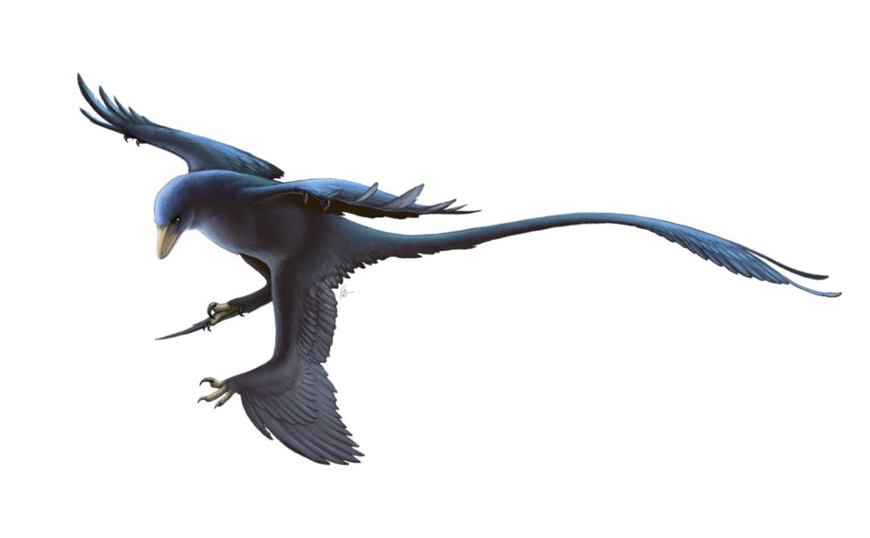

Microraptor
Microraptor gui
Período
Viveu durante o período Cretáceo Inferior, há aproximadamente 125 a 120 milhões de anos.
Alimentação
Era carnívoro e se alimentava de pequenos animais, como peixes e aves.
Características
Era pequeno, com cerca de 80 centímetros de comprimento, e tinha penas nos braços e nas pernas, o que lhe dava a aparência de ter quatro asas.
Curiosidades
- Seu nome significa “pequeno ladrão”.
- Seus fósseis foram encontrados na China.
- Estudos sugerem que suas penas eram pretas, com brilho iridescente.